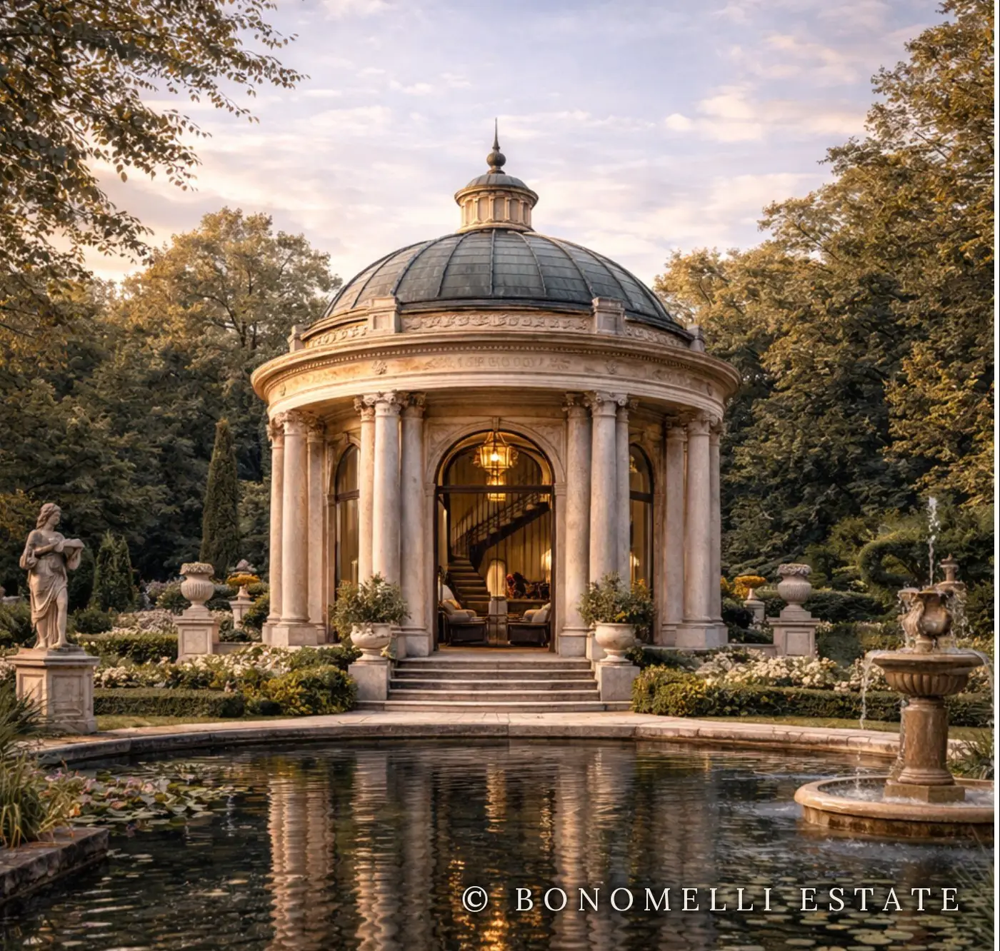
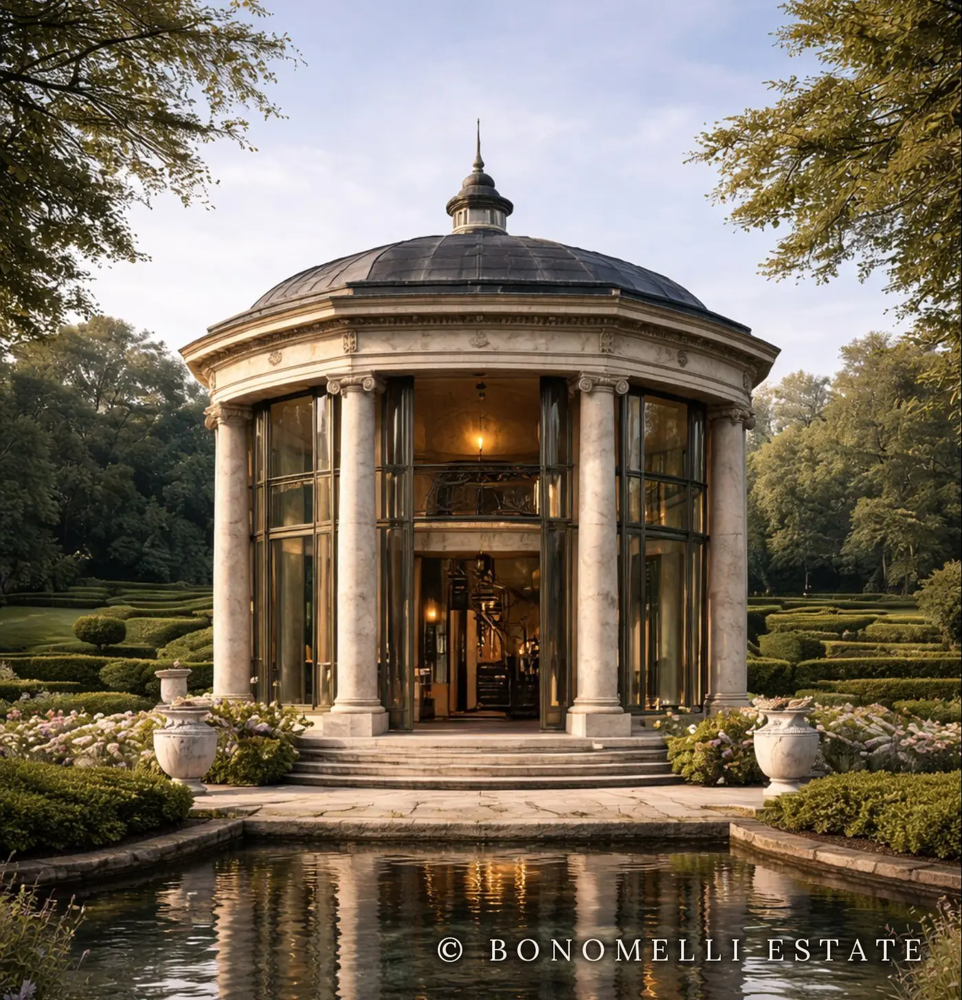
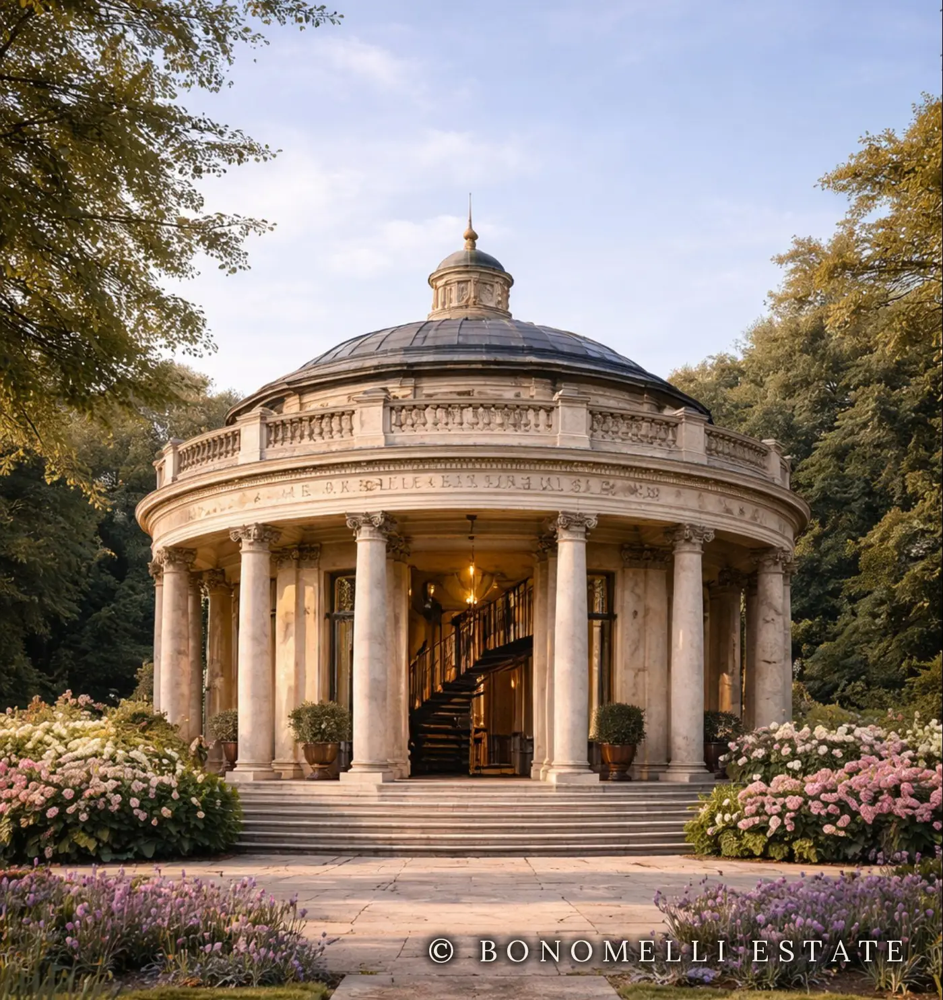

La firma della casa
I Padiglioni
Tempietti, rotonde e orangerie in pietra naturale, nati dalla misura classica e pensati per i parchi delle grandi dimore. Ognuno è un'architettura autonoma: biblioteca, salotto d'estate, sala per ricevimenti.
 BONOMELLI
Due piani ottagonali, biblioteca e scala a chiocciola.
BONOMELLI
Due piani ottagonali, biblioteca e scala a chiocciola.
 CAELO
Tre cupole di vetro, ricevimenti e cene private.
CAELO
Tre cupole di vetro, ricevimenti e cene private.
 MAGNOLIA
Emiciclo a tre cupole sul parterre.
MAGNOLIA
Emiciclo a tre cupole sul parterre.

ROME Tempietto a colonne binate sullo specchio d'acqua.
D’HIER Rotonda ionica vetrata tra le siepi. FORESTIER
Il padiglione del bosco.
FORESTIER
Il padiglione del bosco.

AIR FRAIS Rotonda colonnata tra ortensie e lavanda.Costruzione · comune a tutti i padiglioni
- Sistema
- Modulare, in pietra naturale
- Pietre
- Travertino o breccia sarda
- Metalli
- Ferro battuto a mano
- Vetri
- Vetro temperato a triplo strato
- Energia · opzionale
- Pannelli solari flessibili a film sottile, con aggancio magnetico. Forniti a parte, su preventivo del produttore.
In preparazione
AUREUM
Orangerie termale neoclassica con cupole vetrate e piscina interna in marmo di Carrara.
SPECOLA
Un piccolo spazio di osservazione in pietra, per guardare il paesaggio.
PERPETUUM A.D.
Corridoio monumentale in pietra per giardini e tenute.
ALEXANDRE
Concept di tenuta con facciata coloniale, in più varianti.
Su commissione privata
Schede tecniche, misure e varianti, inviate in forma riservata.